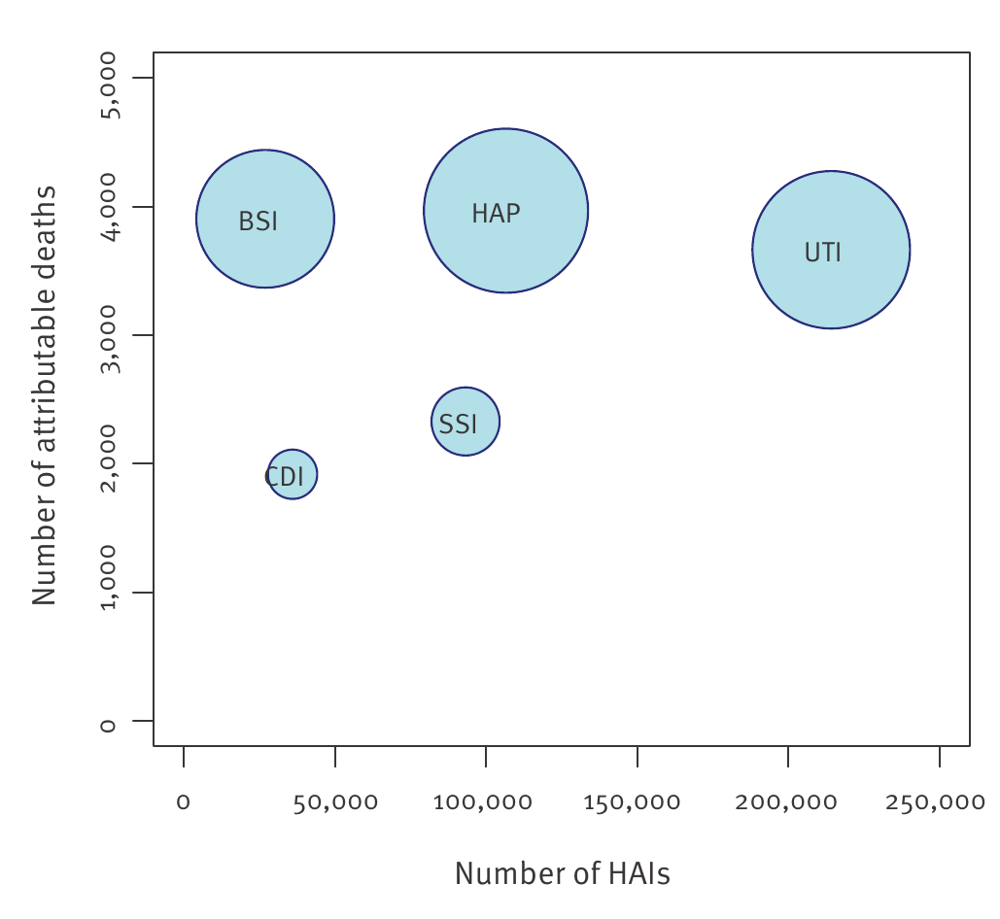
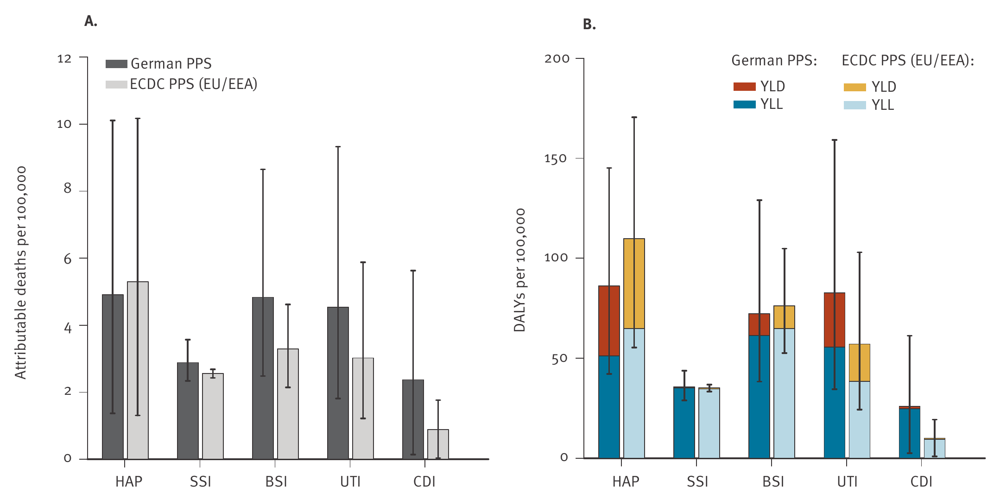

| Measure | Unit | Germany | EU/EEA |
|---|---|---|---|
| Hospital incidence | Infections per 100 hospitalised patients | 2.40 | 2.83 |
| Annual population incidence | Infections per 100,000 residents | 592.1 | 467.9 |
Problem description
A lower infection rate in hospital sounds reassuring. Yet a study of Germany’s 2011 healthcare-associated infections estimated a higher annual infection rate across the population than the European comparison. Both findings can be true: they count infections against different groups of people.
People enter hospital for care, but an infection acquired during that care can add illness to the problem that brought them there. These are healthcare-associated infections, or HAIs. Their consequences can include additional illness, disability and premature death.
For readers of health news, two questions are important. Does a lower infection figure among hospital patients mean a lower burden across the country? And does the most frequent infection cause the greatest harm? A headline based on one measure can leave out another part of the story.
The study by Zacher et al. (2019) helps answer both questions. It estimated the annual burden of five infection types in Germany in 2011: pneumonia, primary bloodstream infection, urinary tract infection, surgical-site infection and Clostridioides difficile infection.
These are historical, model-based estimates. They describe the study period, rather than today’s infection rates.
Analysis
Changing the denominator changes the comparison
Germany’s estimated hospital incidence was lower than the European Union/European Economic Area (EU/EEA) comparison. However, its estimated annual incidence across the resident population was higher.
Table 1 places the two comparisons together. The important difference is the denominator: the group against which infections are counted.
How can the comparison reverse? The researchers estimated annual infections by multiplying hospital incidence by the number of hospital discharges, then dividing by the resident population. A discharge represents a completed hospital stay; one person can have more than one stay.
Germany’s high volume of hospital care per resident therefore helps explain why its population infection rate was higher, despite the lower hospital incidence estimate (Zacher et al. 2019, 9).
This answers the first question: a lower hospital infection measure does not automatically mean a lower population burden. The population measure reflects both infection occurrence during hospital care and the amount of that care. It is not a resident’s probability of becoming infected, and the comparison cannot tell us how many infections reducing hospital use would prevent.
Counting infections does not capture all the harm
The denominator explains the reversal, but infection counts still leave another question unanswered: how much health is lost?
The researchers used disability-adjusted life years (DALYs). This measure combines healthy years lost through premature death with healthy years lost through illness or disability. One DALY represents one lost year of full health.
The original paper’s bubble plot, reproduced in Figure 1, connects infection frequency, attributable deaths and health loss. An attributable death means a death estimated to result from infection, rather than every death among infected patients.
How to read the figure: further right means more infections; higher means more attributable deaths. Start by comparing the bloodstream infection bubble, BSI, with the urinary tract infection bubble, UTI.

BSI is much further left than UTI, showing far fewer estimated infections, but the two bubbles are at similar heights. The study estimated approximately 27,000 bloodstream infections and 3,905 attributable deaths, compared with approximately 214,000 urinary tract infections and 3,664 attributable deaths (Zacher et al. 2019, Table 1).
The health-loss estimates reinforce this contrast. Pneumonia and primary bloodstream infections together accounted for about 28% of estimated infections but 51% of estimated DALYs. Urinary tract infections accounted for about 45% of infections and 27% of DALYs (Zacher et al. 2019, 6).
Because the original chart scales bubble diameter, comparing bubble areas can exaggerate differences. The reported percentages above provide a clearer guide to the size of the contrast. They are approximate summaries of modelled estimates, rather than a precise ranking of the true burden.
This answers the second question: the most frequent infection is not necessarily the greatest source of harm. Prevention discussions should consider severity alongside frequency. Choosing an intervention would also require evidence about preventability, effectiveness and cost.
Higher infection incidence does not settle every comparison
Severity matters, but estimates of harm also have uncertainty. The original paper’s European comparison, reproduced in Figure 2, shows that uncertainty separately for each infection type.
How to read the figure: panel A compares deaths attributable to infection per 100,000 residents. Panel B compares DALYs per 100,000 residents. Within each infection type, compare Germany with the EU/EEA; do not compare bar heights between panels, because their outcomes and scales differ.

Several estimates have wide intervals. Rather than deciding the overall comparison from the visual overlap of these bars alone, Table 2 gives the total rate ratios reported by the researchers.
A ratio of 1 means equal estimated rates; a ratio above 1 means a higher German rate.
| Outcome | Germany / EU/EEA | 95% uncertainty interval |
|---|---|---|
| Infections | 1.27 | 1.14–1.43 |
| Deaths attributable to infection | 1.29 | 0.78–2.18 |
| Healthy years lost (DALYs) | 1.06 | 0.68–1.67 |
The infection-rate ratio’s interval remains above 1, supporting higher population infection incidence in Germany. The mortality and DALY ratio intervals cross 1, allowing both lower and higher German rates. They do not prove that the rates were equal.
The distinction matters for the article’s central question: the evidence supports higher population infection incidence more clearly than it supports higher mortality or overall health-loss rates.
Where the evidence came from
The study used the European Centre for Disease Prevention and Control’s hospital point prevalence survey: a snapshot of infections present among patients at the survey date.
The representative German sample included 9,626 patients in 46 hospitals in 2011. The European comparison included 273,753 patients in 1,149 hospitals surveyed in 2011–2012. Eurostat supplied population and hospital-discharge data (Zacher et al. 2019, 3–4).
The researchers’ BHAI method converted survey prevalence into annual incidence, then used disease-outcome models to estimate attributable deaths and DALYs. They reported medians and uncertainty intervals using 1,000 Monte Carlo simulations.
A larger German convenience sample helped estimate infection duration and age–sex distributions. This article consistently uses the representative sample’s headline results, rather than mixing the two German samples.
Three limitations are particularly important:
- Historical estimates are not current surveillance. These findings do not establish today’s hospital safety. Infection episodes also do not necessarily represent different people.
- The study did not cover every HAI. The five infection types represented about 79% of HAIs in the European survey. German hospitals were sampled by size, but differences in patient mix could still affect the estimates.
- Health-loss estimates depend on assumptions. Some disease-outcome evidence was sparse or of moderate to low quality, and European assumptions about underlying illness were applied to Germany (Zacher et al. 2019, 7, 10).
The uncertainty intervals reflect inputs represented in the model; they cannot capture every possible bias. The source paper provides the detailed methods and limitations for readers who want to investigate further.
Conclusion
A lower infection measure among hospital patients did not mean a lower annual infection rate across Germany’s population in these historical estimates. The amount of hospital care helps explain the difference. Likewise, the most frequent infections were not necessarily those producing the greatest health loss.
The European comparison was clearest for infection incidence; the mortality and DALY comparisons remained uncertain.
For readers of infection news, the practical takeaway is to ask what is counted, who it is divided by, and how harm and uncertainty are represented. These questions give a fuller interpretation than a single rate.
The study supports that careful reading. It does not establish current infection rates or the effect of a particular service change (Zacher et al. 2019).
Reference
Zacher, Benedikt, Sebastian Haller, Niklas Willrich, et al. 2019. “Application of a New Methodology and R Package Reveals a High Burden of Healthcare-Associated Infections (HAI) in Germany Compared to the Average in the European Union/European Economic Area, 2011 to 2012.” Eurosurveillance 24 (46): 1900135. https://doi.org/10.2807/1560-7917.ES.2019.24.46.1900135.
Figure attribution
The reproduced figures are from Zacher et al. (2019),
The surrounding page text was cropped and the captions were rewritten for this blog. The graphs were not redrawn.